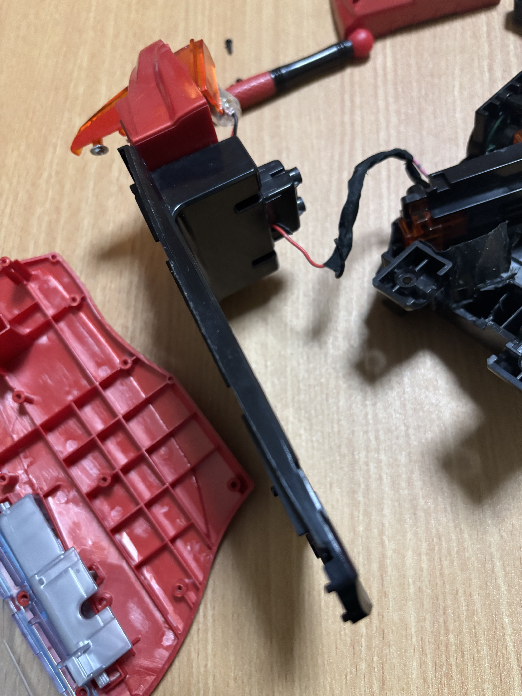
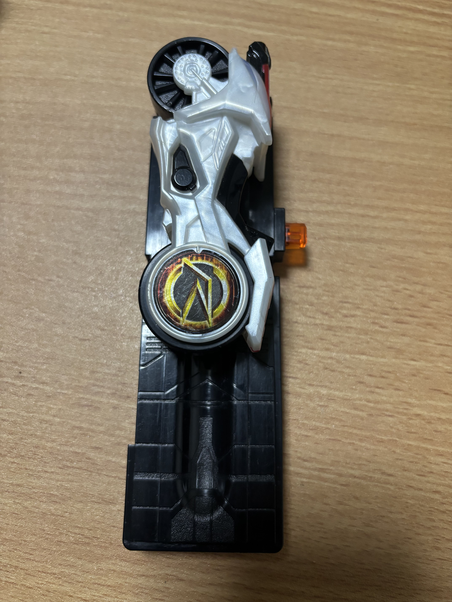
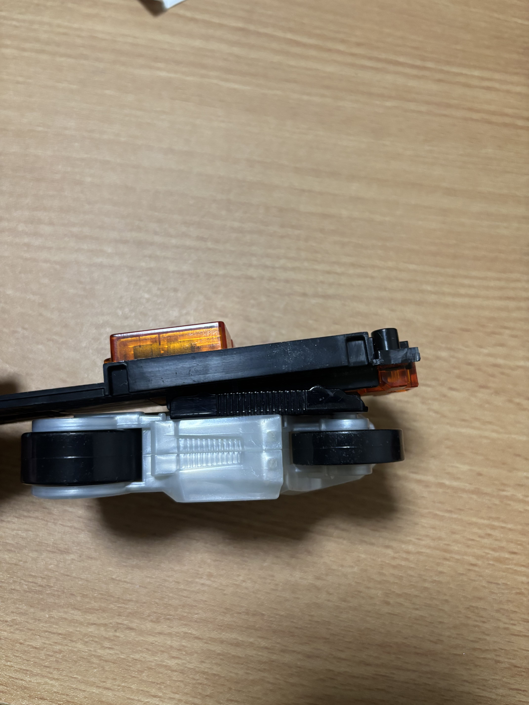
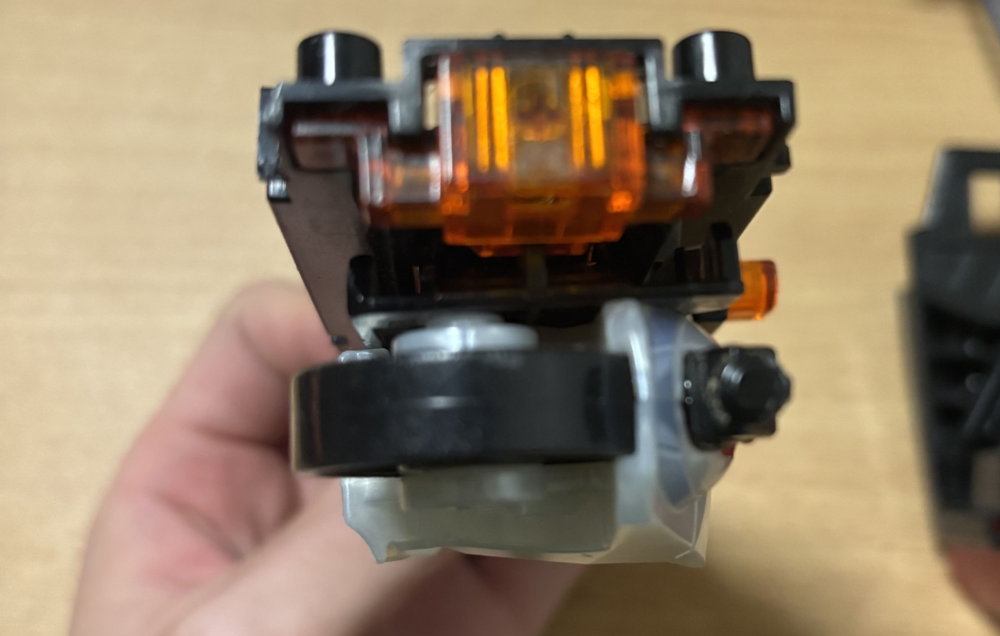
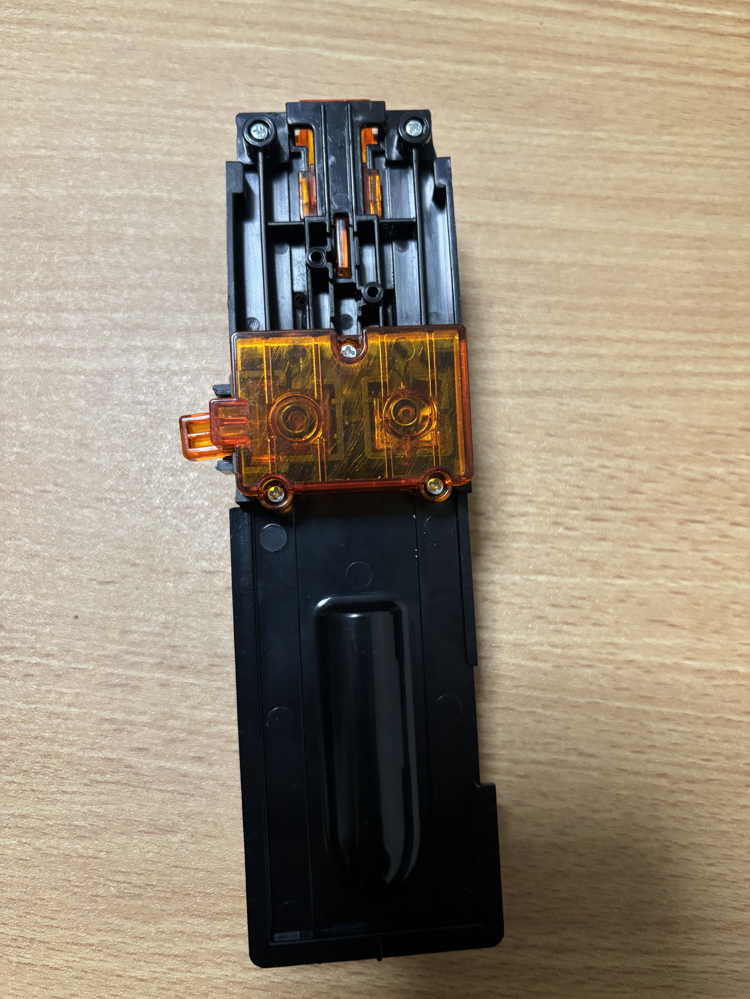
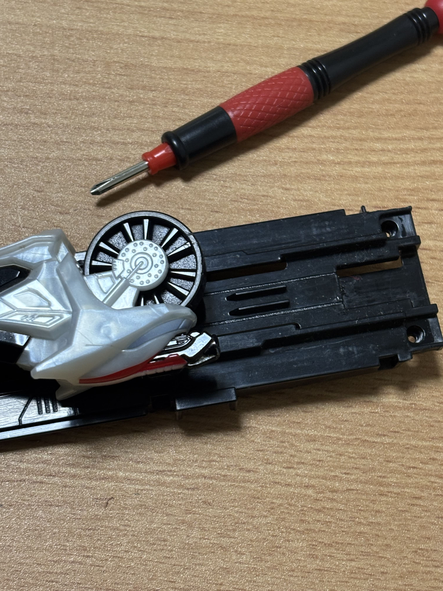
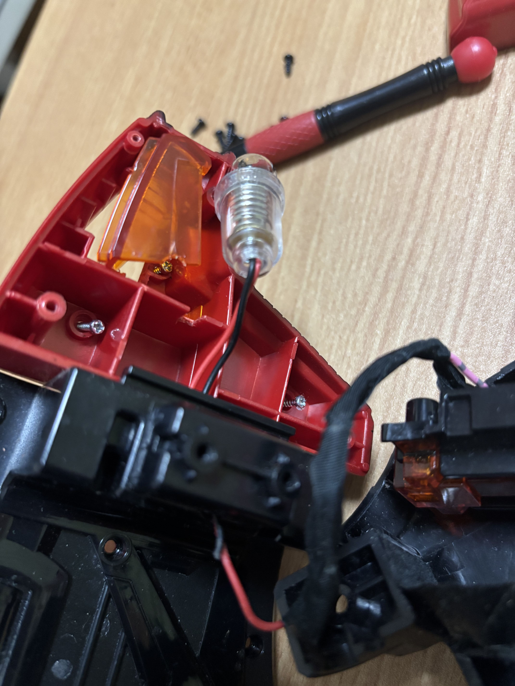
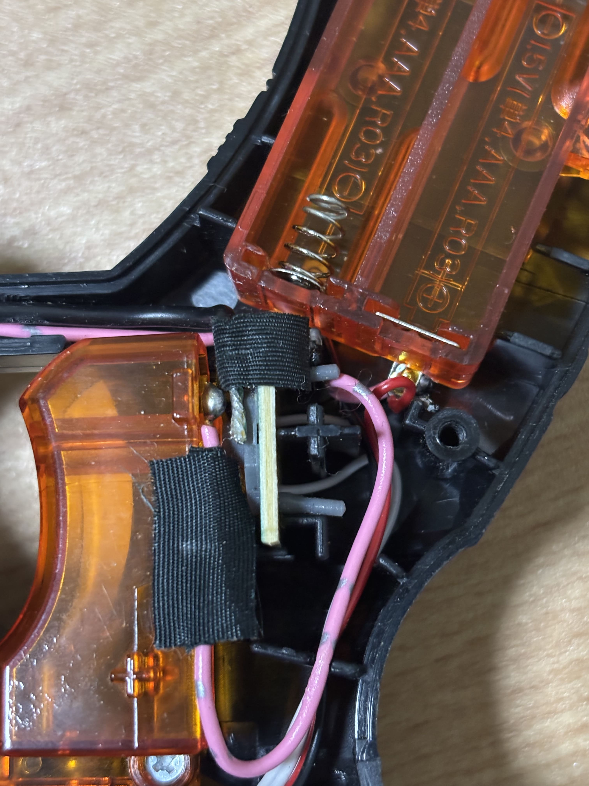

ドア銃 シグナルバイク 抜けない の対処法
2025年10月25日シグナルバイクが抜けない場合の対処法
シグナルバイクが抜けなくなった皆さん、こんにちは。UltiMorseです。この記事では、ドア銃のシグナルバイクが抜けない場合の対処法について解説します。令和に何を言っているんだという感じですが、ドア銃と検索バーに入れると、「シグナルバイク 抜けない」という文言が出てくるので、困っている人が多いと思ったので片手間に書いてます。自分は仮面ライダーを子供時代にも見ていませんでしたが、弟に頼まれていじくっていたときの見解です。
結論から言うと、シグナルバイクは分解しないと取れないというのが私の見解です。以下に、画像付きで解説します。
取り出しの手順
まず、ドア銃を分解します。ドア銃の側面にあるネジを外し、カバーを取り外します。画像ではドア側も分解していますが、分解の必要はないです。
シグナルバイクがハマっているレールは普通に取り外せます。裏側のスイッチの配線はネジで止まっているので外します。
この状態まで分解しても、シグナルバイクは抜けません。上下左右、様々な方向に引っ張っても取れません。分解しない状態であちこち引っ張っても取れないわけです。レールの前側、シグナルバイクのフロント側のバネ付きスイッチのところがハマっているためです。
横から見た感じ、なんだか斜めに無理やりぶっ刺さっている感じがします。ただ、真ん中のパーツを外しても取れませんでした。
シフトカーを差し込んだときのあのガチャっと感を生んでいるこいつが犯人だと思います。いい仕事をしてくれているのに、非常に残念です。裏側のネジを外して取ります。
画像の上側2つのネジですね。真ん中のやつももとに戻せるように構造を確認しつつ外したほうがスムーズかも？必ずしも外す必要はないと思います。
無事にシグナルバイクを救出できました。やはり、奥側のスイッチの部分で引っかかっているようです。
おまけ
ドア銃のフロントランプのところに、小学校の理科の授業でもらった豆電球を仕込んであります。
トリガーのところがスイッチ的な感じになっています。
まとめ
以上、ドア銃のシグナルバイクが抜けない場合の対処法について解説しました。シグナルバイクを取り出すには、ドア銃を分解し、レールの前側のバネ付きスイッチを外す必要があります。分解する前に写真を取ったり、ネジを整理するのは基本ですが、もとに戻せるように注意してくださいね。
これは昔のことを記事にしましたが、物心ついたときから何でもかんでも分解してこんなことばかりやっていたので、今後もこういう記事を書いていけるといいなと思います。